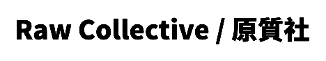
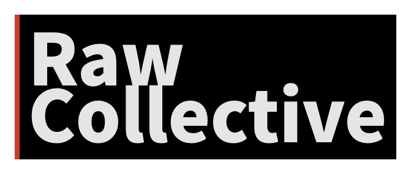

About
Its members come from diverse media and disciplines. Through the act of making, the collective explores how materials, space, craft, and new media can speak directly to human perception and lived experience.


Its members come from diverse media and disciplines. Through the act of making, the collective explores how materials, space, craft, and new media can speak directly to human perception and lived experience.
成員的背景橫跨不同媒介與學科。原質社相信「去除多餘，回到本質」， 並透過製作本身，探索材料、空間、工藝與新媒體如何直接觸及人的感知與經驗。
Directory